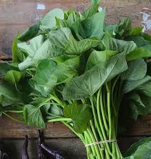
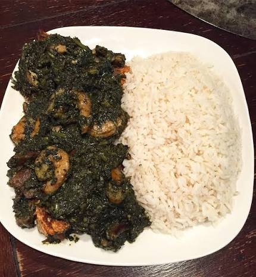

Liberian Potato Greens


Description
Liberian potato greens are a beloved, rich, and savory West African stew made from finely chopped sweet potato leaves cooked with oil, onions, peppers, and proteins.
This testy delicious meal can be cooked either with red palm oil or argo oil.
Key Ingredients
- Sweet Potatoe Greens
- Oil
- Fish/Meat
- Seasoning
- Spice
- Onions
Steps to Cook Potato Greens
- Harvest the greens if you plant it or buy some from the local market
- Slice the greens into fine slices
- Heat the cooking oil in a cooking pot
- Add the peppers, and Onions to the oil after heating
- Add the sliced greens to the pot
- Allow it to heat for sometime
- Add a bit of water
- Add the verious seasoning of your choice
- Add fish/Meat (this can be raw or dried fish/meat)
- Allow it to cook and enjoy your tasty and delicious meal
Home